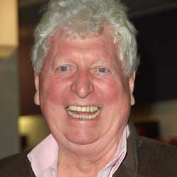

|
| Home The Doctors The Companions The Villians Show History |
Tom BakerThomas Stewart "Tom" Baker (born 20 January 1934) is an English actor. He is best known for his role as the fourth incarnation of the Doctor in the science fiction television series Doctor Who, (1974-81).[1] In a 2005 poll, Baker's voice was found to be the fourth most recognisable in Britain.[2] At the age of 15 Baker became a novice monk with the De la Mennais Brothers in Jersey and later in Shropshire. However, he gradually lost his vocation and when 21 he left monastic life and undertook National Service in the Royal Army Medical Corps. On leaving the army, he joined the Merchant Navy and then became an actor joining the Royal National Theatre Company under Laurence Olivier.[1] His first major film role was as Rasputin in Nicholas and Alexandra, and he played the villain in The Golden Voyage of Sinbad in 1973. In 1974, Baker assumed the role of the Doctor in the BBC science fiction series, Doctor Who, becoming an iconic figure and the longest to hold the role. He returned to the show in the 50th anniversary special in 2013 playing a character who calls himself The Curator. With his highly distinctive voice, in addition to other character roles, Baker has narrated in video games and series including Little Britain. He has also reprised his role as the Doctor in audio recordings for Big Finish Productions. Married three times, the second to Doctor Who co-star Lalla Ward, Baker has two sons from his first marriage.
|
|
Madeleine Schwartz Ann Marie Skjold |
Content derived from Dr. Who Wikipedia.
|